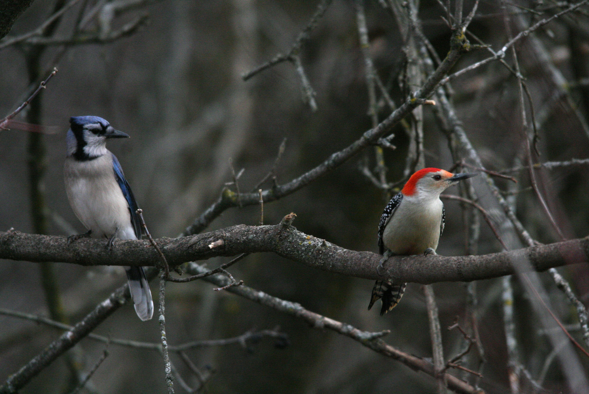

The Sad Tale of Woodpecker and Bluejay

A sister and brother lived alone in a house in the forest. Their father and mother were dead. The boy had a strange magic power which had been given to him by his parents. The two children loved each other very deeply. The brother cared well for his sister and protected her from all danger. He knew that the forest had many evil creatures who would be glad to carry off his sister if they could. The brother often went far away to hunt. He was often gone for many days. When he went away, he always said to his sister, "Keep the door barred while I am gone, and do not speak to anyone."
One day the brother went far away into the
forest. He would not be home till evening. He said
to his sister, "Keep the door barred; do not eat
until I come back, and do not speak to anyone." Then
he went his way into the woods. The sister forgot
her brother's warning. It was a hot day, and she
opened the door for air. Soon Otter appeared at the
door. The girl spoke to him and he came in. Otter
spoke to her, but she remembered the warning of her
brother and she would speak no more. Otter talked
and asked her questions, but she would not answer. Then Otter became very angry. He determined to make her speak. He caught her roughly and pulled down her hair. Her hair was very long and beautiful and as black as the raven's wing. He dragged her by the hair to the fire, as if he would burn her, and said, "You will speak, you will speak or I will kill you." But she would not speak. Then he cut off her hair, hoping that she would cry out. But still she refused to utter a sound. Then he ate her food. He ate everything in the house, for he was a great eater. But still she said not a word of protest. Then Otter went away in disgust and rage, babbling loudly as he went.
But just as Otter left the house, the girl's
brother was coming home. He saw Otter through the
trees, and he knew that harm had been done. He came
to the house, and through the door he saw his sister
with her hair cut short. When he came in, he asked
her what was the matter. She told him what had
happened. He was very cross, and he scolded her for
leaving the door open and for speaking to Otter. He
said, "You did not heed my warning. Why did you not
run out when Otter came in?" But the girl said, "It
would have done no good; he would have followed me
and caught me." And the man said, "Why did you not
wish for me?" for each had power to bring the other
home at once by a wish. But his sister said, "I was
so frightened I did not think of it." "Why do you
cry?" the brother asked. "Because he hurt me," she answered, "and because he cut off my beautiful hair."
Then the brother took pity on her. He comforted her and said, "Do not cry for that; I will make your hair grow beautiful again. But your good name is lost; you can never get that back; you have disobeyed my orders; you have talked to a wicked man."
Then he dressed his sister in good clothes, and washed and combed her hair. And as he combed it, it grew longer and longer and more beautiful than before, and the girl was comforted. Then he made paint from roots. He made red paint and blue paint. And he painted her face and head red, and painted his own face and head blue. Then he watched for Otter that he might take vengeance. Soon he saw Otter going to the lake to fish. Otter went down under the water. The brother went to the shore of the lake and sang his magic song. And at once the lake froze over. Otter felt the cold underneath the water, and he came up in great haste. He bumped his head on the ice and broke the ice; then he stuck his head through the hole to see what had happened. But as he looked, the water froze around his neck, and he could get neither under the ice nor upon it. He was held fast, and the brother killed him by breaking his head with a stout stick.
Then the brother went home and told his sister that he had taken vengeance and had killed Otter. And he said, "Now, you and I must part." His sister cried and pleaded to be forgiven, but he said, "We must part; we cannot dwell longer among our people; they know you have disobeyed me and have done evil."
Then they said good-bye. And the brother said, "You go south-west; I will go north-east; and soon we shall be changed from what we are." Then they parted and went in different ways as he had said. And at once by his magic power they were changed, and she became a Woodpecker and he became a Bluejay. And her head is still red because of the paint he put on her; and he is still blue because of the paint he put on himself. But although they parted, they are still mindful of each other. She always taps on the trees to let her brother know that she is still alive, and he calls, "I am here; I am here," to let her know that he still lives. But he keeps more to the north country, and often in the autumn when the other birds fly south, he remains behind to spend the winter in the north.


The Sad Tale of Woodpecker and Bluejay
Transcribed by Cyrus MacMillan, 1917. The writer's deepest thanks are expressed to the nameless Indians and "habitants," the fisherman and sailors, "the spinners and the knitters in the sun," from whose lips he heard these stories.
Back to Top